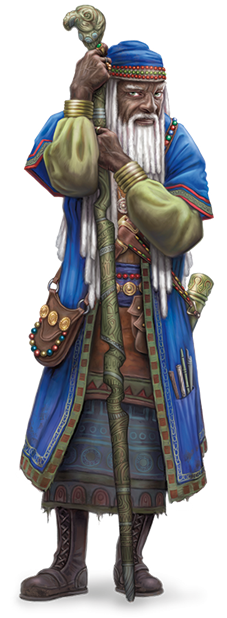

According to Wizards of the Coast, "Wild and enigmatic, varied in form and function, the power of magic draws students who seek to master its mysteries. Some aspire to become like the gods, shaping reality itself. Though the casting of a typical spell requires merely the utterance of a few strange words, fleeting gestures, and sometimes a pinch or clump of exotic materials, these surface components barely hint at the expertise attained after years of apprenticeship and countless hours of study."
Wizards! The titular characters often have the spotlight, but one thing that new (and old) players should keep in mind: wizards are the hardest class to survive as, with the smallest hit die, but have the most powerful power curve in the entire game. That is to say, at level 1 they are very weak, and at level 20 they are on (D&D) god-tier levels.
Spellbooks! Unlike other caster-classes, wizards can learn new spells just by writing them down!
